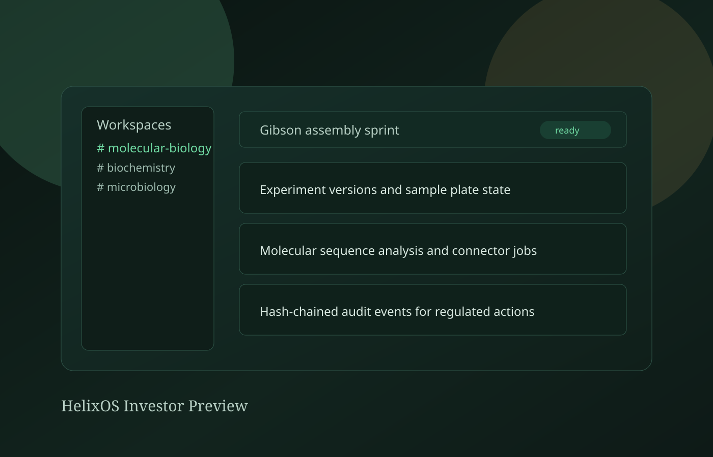

Scientific workspace graph
Channel-style workspaces isolate programs and teams while preserving shared operating context.
HelixOS
We are building a unified system for ELN, molecular design, AI copilots, and connector-driven automation — with an audit trail designed for regulated science.

3D concept stage: experiment lifecycle, sequence pipeline, and regulated audit flow.
HelixOS merges workspace collaboration, ELN structure, molecular analysis surfaces, local AI connectors, and auditability into one system that scientists can run in browser development mode or desktop-local mode.
Channel-style workspaces isolate programs and teams while preserving shared operating context.
Projects, experiments, samples, and reusable protocols are modeled as typed contracts with version history.
Electron + FastAPI sidecar + MCP bridge keeps sensitive connectors close to instrument and bench workflows.
Hash-chained audit events are native to the platform, supporting compliance-forward operational design.
Start with the public site, then choose the path that fits your team: explore the source, download the desktop app, or contact us for a pilot.
Read the product, traction, and investor sections to see the current scope and operating thesis.
Use the latest GitHub release for desktop evaluation, or build from source if you want to inspect the codebase.
Light pastel is the default. Use the theme button in the header to toggle dark mode for comparison.
Request the deck or start a conversation if you are interested in a pilot, partnership, or investment discussion.
The platform is in active MVP execution with working browser and desktop stacks, release automation, and domain-level API surfaces.
Auth, ELN, Molecular, AI, MCP, and Audit are implemented in the current API runtime.
Browser development mode and desktop sidecar mode run end-to-end from a shared web workspace.
Tagged desktop builds publish a macOS DMG, establishing a direct distribution channel.
We believe modern biology teams need one AI-native operating system that joins experimental record, molecular iteration, automation, and governance.
Scientific software stacks remain fragmented while labs move toward AI-guided workflows and stricter traceability demands.
Contact foundersAccelerate protocol intelligence, production auth/compliance readiness, and pilot rollouts with partner labs.
Request: strategic seed investors aligned with biotech infrastructure and regulated AI software.
Use the packaged desktop build for local evaluation, or run the monorepo for full development visibility.
macOS DMG from GitHub Releases. Builds are not Apple-notarized yet; allow in System Settings if needed.
Latest desktop releasegit clone https://github.com/musicofthings/helixos.git
cd helixos
npm run setup
npm run dev:browserDesktop: npm run dev:desktop · Pack: cd apps/desktop && npm run pack
Architecture, API contracts, and module docs are public for technical due diligence.
Open README on GitHub